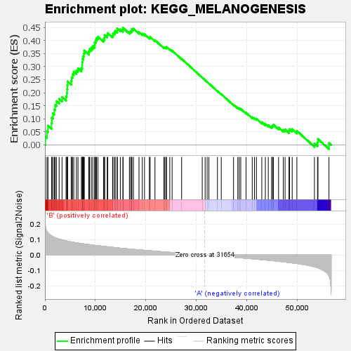

| | | Dataset | my.my.cls#B_versus_A.my.cls#B_versus_A_repos |
| Phenotype | my.cls#B_versus_A_repos |
| Upregulated in class | B |
| GeneSet | KEGG_MELANOGENESIS |
| Enrichment Score (ES) | 0.44879177 |
| Normalized Enrichment Score (NES) | 1.6404957 |
| Nominal p-value | 0.027777778 |
| FDR q-value | 0.75024986 |
| FWER p-Value | 0.57 |
Table: GSEA Results Summary

Fig 1: Enrichment plot: KEGG_MELANOGENESIS
Profile of the Running ES Score & Positions of GeneSet Members on the Rank Ordered List
| SYMBOL | TITLE | RANK IN GENE LIST | RANK METRIC SCORE | RUNNING ES | CORE ENRICHMENT | | 1 | GNAI2 | na | 77 | 0.185 | 0.0314 | Yes |
| 2 | DVL3 | na | 409 | 0.150 | 0.0521 | Yes |
| 3 | WNT6 | na | 605 | 0.142 | 0.0737 | Yes |
| 4 | LEF1 | na | 1311 | 0.123 | 0.0830 | Yes |
| 5 | TCF7L1 | na | 1370 | 0.122 | 0.1036 | Yes |
| 6 | FZD9 | na | 1579 | 0.118 | 0.1208 | Yes |
| 7 | CAMK2A | na | 1860 | 0.113 | 0.1359 | Yes |
| 8 | FZD2 | na | 2023 | 0.111 | 0.1527 | Yes |
| 9 | WNT16 | na | 2276 | 0.108 | 0.1674 | Yes |
| 10 | CTNNB1 | na | 2807 | 0.102 | 0.1762 | Yes |
| 11 | MC1R | na | 3382 | 0.097 | 0.1832 | Yes |
| 12 | PRKACA | na | 4181 | 0.091 | 0.1853 | Yes |
| 13 | DCT | na | 4328 | 0.090 | 0.1986 | Yes |
| 14 | CAMK2B | na | 4397 | 0.090 | 0.2133 | Yes |
| 15 | CALM2 | na | 4437 | 0.089 | 0.2284 | Yes |
| 16 | WNT5B | na | 4481 | 0.089 | 0.2434 | Yes |
| 17 | WNT3 | na | 5196 | 0.084 | 0.2457 | Yes |
| 18 | MAPK1 | na | 5290 | 0.084 | 0.2589 | Yes |
| 19 | PRKX | na | 5463 | 0.083 | 0.2706 | Yes |
| 20 | CREB3L2 | na | 5711 | 0.081 | 0.2806 | Yes |
| 21 | GNAI1 | na | 6226 | 0.079 | 0.2855 | Yes |
| 22 | FZD7 | na | 6543 | 0.077 | 0.2935 | Yes |
| 23 | WNT8B | na | 7223 | 0.074 | 0.2945 | Yes |
| 24 | CALML5 | na | 7383 | 0.073 | 0.3047 | Yes |
| 25 | PLCB1 | na | 7387 | 0.073 | 0.3175 | Yes |
| 26 | ADCY8 | na | 7431 | 0.073 | 0.3297 | Yes |
| 27 | POMC | na | 7579 | 0.072 | 0.3398 | Yes |
| 28 | WNT10A | na | 7720 | 0.071 | 0.3500 | Yes |
| 29 | CREB1 | na | 7786 | 0.071 | 0.3615 | Yes |
| 30 | FZD1 | na | 8673 | 0.067 | 0.3577 | Yes |
| 31 | PRKACB | na | 8823 | 0.067 | 0.3669 | Yes |
| 32 | FZD10 | na | 9168 | 0.065 | 0.3723 | Yes |
| 33 | RAF1 | na | 9467 | 0.064 | 0.3784 | Yes |
| 34 | FZD8 | na | 9840 | 0.062 | 0.3828 | Yes |
| 35 | WNT9B | na | 9854 | 0.062 | 0.3936 | Yes |
| 36 | WNT7A | na | 10060 | 0.062 | 0.4009 | Yes |
| 37 | WNT9A | na | 10211 | 0.061 | 0.4090 | Yes |
| 38 | WNT2 | na | 10489 | 0.060 | 0.4147 | Yes |
| 39 | WNT1 | na | 11589 | 0.056 | 0.4052 | Yes |
| 40 | ADCY3 | na | 11792 | 0.055 | 0.4114 | Yes |
| 41 | GNAO1 | na | 11811 | 0.055 | 0.4208 | Yes |
| 42 | CREB3L3 | na | 12329 | 0.053 | 0.4210 | Yes |
| 43 | DVL2 | na | 12434 | 0.053 | 0.4285 | Yes |
| 44 | ADCY2 | na | 13390 | 0.049 | 0.4204 | Yes |
| 45 | WNT3A | na | 13455 | 0.049 | 0.4279 | Yes |
| 46 | EP300 | na | 13769 | 0.048 | 0.4309 | Yes |
| 47 | PRKCA | na | 13897 | 0.047 | 0.4370 | Yes |
| 48 | WNT2B | na | 14298 | 0.046 | 0.4381 | Yes |
| 49 | CALML6 | na | 14318 | 0.046 | 0.4460 | Yes |
| 50 | ADCY5 | na | 14923 | 0.044 | 0.4431 | Yes |
| 51 | CALM3 | na | 15438 | 0.043 | 0.4415 | Yes |
| 52 | WNT11 | na | 15455 | 0.043 | 0.4488 | Yes |
| 53 | WNT5A | na | 16716 | 0.039 | 0.4334 | No |
| 54 | MAP2K1 | na | 16959 | 0.038 | 0.4358 | No |
| 55 | GNAS | na | 17183 | 0.037 | 0.4385 | No |
| 56 | FZD3 | na | 17202 | 0.037 | 0.4448 | No |
| 57 | PRKACG | na | 17521 | 0.036 | 0.4456 | No |
| 58 | FZD4 | na | 18610 | 0.033 | 0.4322 | No |
| 59 | ADCY4 | na | 19259 | 0.032 | 0.4264 | No |
| 60 | GSK3B | na | 19705 | 0.030 | 0.4239 | No |
| 61 | WNT7B | na | 20664 | 0.028 | 0.4118 | No |
| 62 | CREB3L4 | na | 20816 | 0.027 | 0.4140 | No |
| 63 | FZD5 | na | 21774 | 0.025 | 0.4015 | No |
| 64 | PRKCG | na | 23529 | 0.020 | 0.3740 | No |
| 65 | ASIP | na | 23726 | 0.020 | 0.3740 | No |
| 66 | CREBBP | na | 24006 | 0.019 | 0.3725 | No |
| 67 | ADCY9 | na | 24042 | 0.019 | 0.3752 | No |
| 68 | KIT | na | 24704 | 0.017 | 0.3665 | No |
| 69 | ADCY7 | na | 25166 | 0.016 | 0.3612 | No |
| 70 | MAP2K2 | na | 27050 | 0.011 | 0.3299 | No |
| 71 | HRAS | na | 31126 | 0.001 | 0.2580 | No |
| 72 | CALM1 | na | 31704 | -0.000 | 0.2479 | No |
| 73 | CAMK2G | na | 32105 | -0.001 | 0.2410 | No |
| 74 | PLCB4 | na | 32447 | -0.002 | 0.2353 | No |
| 75 | ADCY1 | na | 34138 | -0.006 | 0.2065 | No |
| 76 | PRKCB | na | 34892 | -0.008 | 0.1945 | No |
| 77 | TYR | na | 37318 | -0.014 | 0.1542 | No |
| 78 | PLCB2 | na | 38162 | -0.016 | 0.1421 | No |
| 79 | KRAS | na | 38448 | -0.017 | 0.1401 | No |
| 80 | TYRP1 | na | 38746 | -0.018 | 0.1381 | No |
| 81 | KITLG | na | 39796 | -0.021 | 0.1232 | No |
| 82 | MITF | na | 41021 | -0.024 | 0.1058 | No |
| 83 | TCF7 | na | 41455 | -0.025 | 0.1026 | No |
| 84 | CALML3 | na | 41850 | -0.027 | 0.1004 | No |
| 85 | ADCY6 | na | 42912 | -0.030 | 0.0868 | No |
| 86 | WNT8A | na | 43609 | -0.032 | 0.0802 | No |
| 87 | EDN1 | na | 44195 | -0.034 | 0.0758 | No |
| 88 | NRAS | na | 44857 | -0.036 | 0.0704 | No |
| 89 | CREB3 | na | 45031 | -0.036 | 0.0737 | No |
| 90 | WNT4 | na | 45218 | -0.037 | 0.0769 | No |
| 91 | DVL1 | na | 46236 | -0.040 | 0.0661 | No |
| 92 | WNT10B | na | 47157 | -0.044 | 0.0576 | No |
| 93 | MAPK3 | na | 47515 | -0.045 | 0.0592 | No |
| 94 | EDNRB | na | 48296 | -0.048 | 0.0539 | No |
| 95 | FZD6 | na | 48406 | -0.048 | 0.0605 | No |
| 96 | CREB3L1 | na | 48926 | -0.051 | 0.0603 | No |
| 97 | GNAQ | na | 49856 | -0.055 | 0.0535 | No |
| 98 | GNAI3 | na | 53328 | -0.076 | 0.0055 | No |
| 99 | TCF7L2 | na | 53938 | -0.082 | 0.0092 | No |
| 100 | CAMK2D | na | 54027 | -0.082 | 0.0222 | No |
| 101 | PLCB3 | na | 56203 | -0.133 | 0.0074 | No |
Table: GSEA details [plain text format]
Fig 2: KEGG_MELANOGENESIS
Blue-Pink O' Gram in the Space of the Analyzed GeneSet
 Fig 3: KEGG_MELANOGENESIS: Random ES distribution
Fig 3: KEGG_MELANOGENESIS: Random ES distribution
Gene set null distribution of ES for KEGG_MELANOGENESIS